Last updated: 29 October 2026
BAI helps you understand your workload and become more aware of your work-life boundaries. It can support you in communicating and negotiating these boundaries with others, including how and when you are reachable. This guide takes you through the app step by step, from initial setup to everyday use: Controls, then Schedule, Status, Alerts, Mood, and finally Insights.
Each step has the screen you should be looking at. You do not have to read it all: search for a word, or open one section at a time. Once BAI is set up, the I want to… shortcuts further down take you straight to one thing.
Read this one first
Everything after this is setup, done once. These ten are the ones worth remembering — they are what using BAI looks like most days, once it is running.
The arc on the dashboard shows how available you are right now. Tap it when you are not sure what to say, and BAI opens What to try — concrete ways to communicate, reschedule and protect yourself, for the status you are on right now — and Your move, the one to act on.
Do this any time you are not sure how to negotiate in the moment.
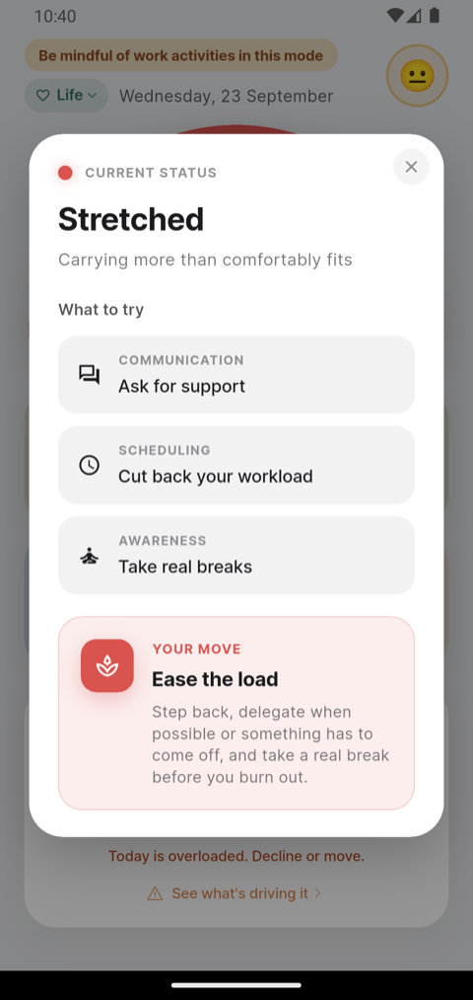
Tap the face and say how you feel. BAI may offer to set your status to match it — accept it, then tap the arc. The advice underneath now speaks to how you actually feel, not only to what your calendar shows.
New When the check-in is done, BAI shows your status with one line on top saying what the check-in did: Your status is now Stretched, from your check-in, or Your status stays Busy. After a heavy check-in it also suggests a break (step 10).
The mood check-in sets the negotiation; the arc tells you how to run it.
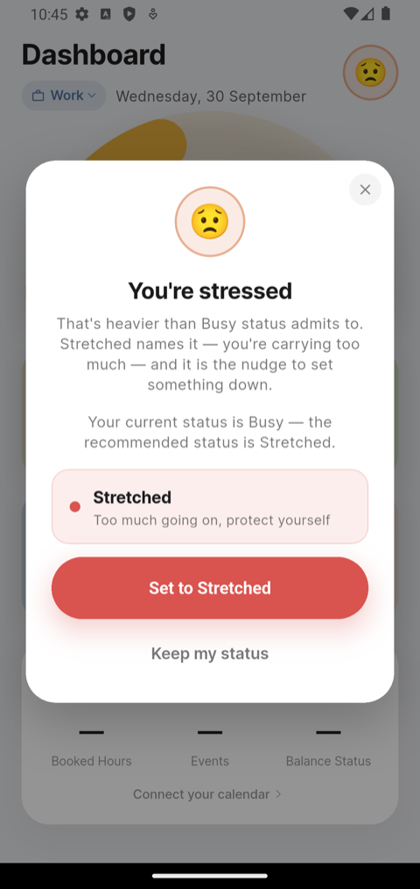
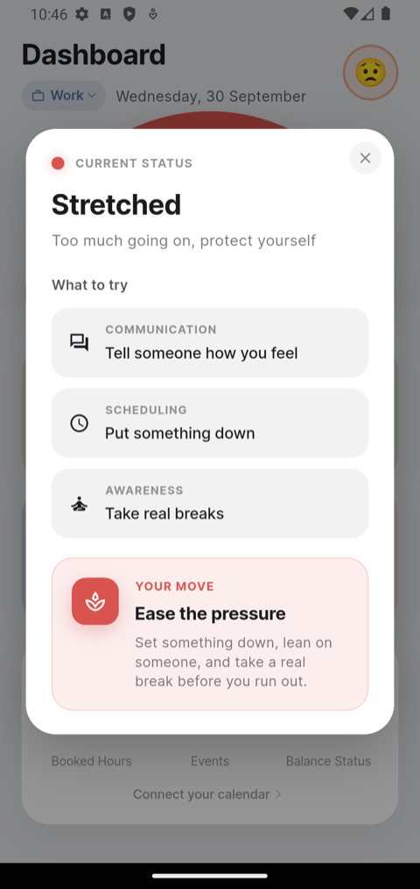
Before you say yes to something weeks out, look the date up on Schedule. Knowing what a week already holds is what tells you what to accept, what to decline, and what to ask to have moved.
This is the negotiation you have with whoever is asking, before you answer them.
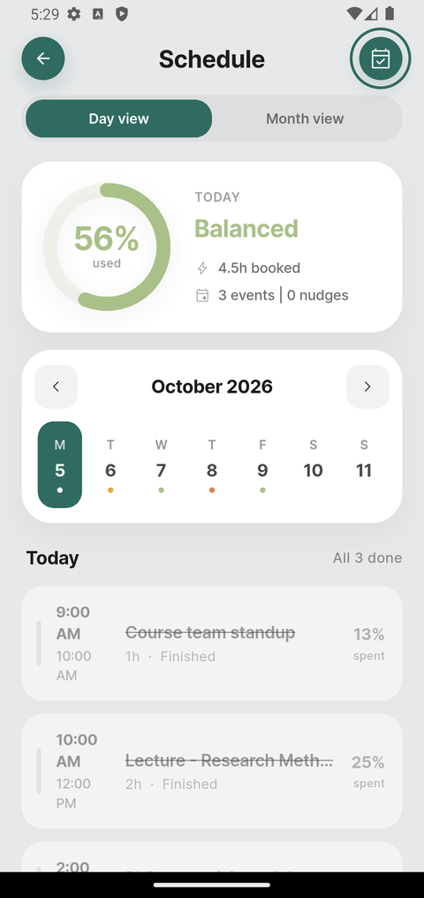
On a day that is genuinely packed, set aside the events that are not really work you are carrying — Don't count this event. That is a negotiation too: with yourself, about what your day actually holds, before you take it to anyone else.
Do this whenever a day reads fuller than it really is.
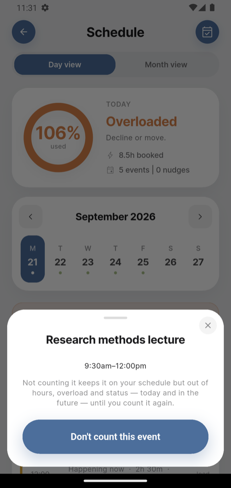
For something you need to get ready for, tap it on Schedule and choose Remind me to prepare: one to five work days before it. For something that repeats, like a weekly lecture, choose Remind me before every one and pick one.
When it is due, BAI tells you: Coming up Thursday 14:00: 'Board presentation' — don't forget to prepare. On the lock screen when you are away, in the app when it is open. Tap Open to see that day.
Set it the moment you agree to something, so the preparation gets a place in your week too. More on reminders to prepare.
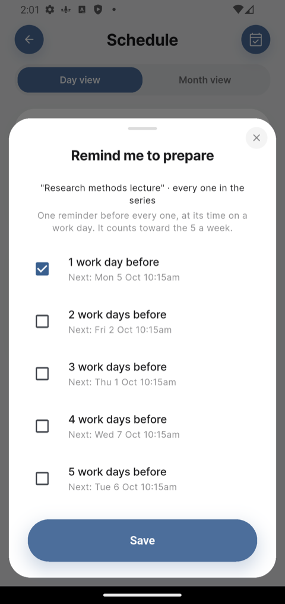
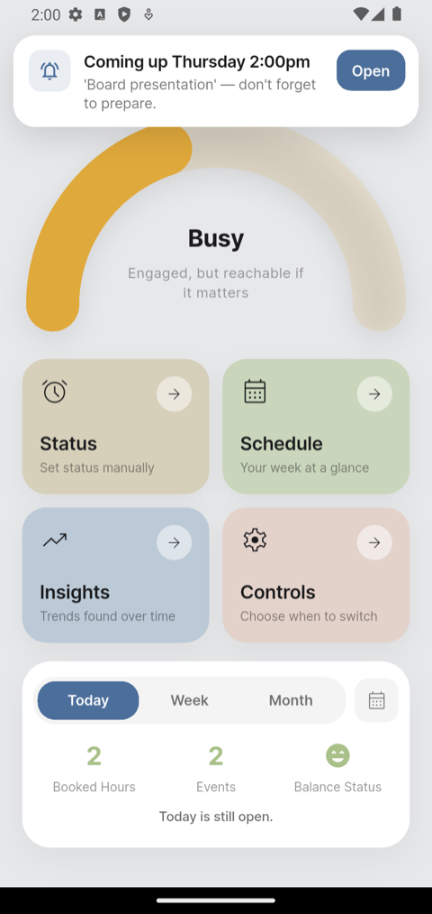
Working outside your working hours or over the weekend, on something that is not in your calendar? On the dashboard in Life mode, tap the yellow line (Be mindful of work activities in this mode ›) and set how long, from 30 minutes to 5 hours.
Your mode stays on Life and your status goes to Busy until the time is up. If a calendar event starts in that time, it moves to Heads-down and back. Tap the line again to change the time or end it. Stretched and Unavailable are left as you set them.
Forgot to say? When something suggests you worked, BAI asks the next day: Did you work outside your hours yesterday? Your answer only saves the hours. If you already set the time with the yellow line, it does not ask again.
Answer None three times in a row for the same weekday and BAI skips that weekday the next week, then asks again. Work you set with the yellow line on any day brings the question back straight away.
You start it while your schedule is on. If you switch the schedule off while it runs, it carries on to the time you set, and you can still change or end it. With the schedule off, switch to Work by hand instead. Where the hours show up.
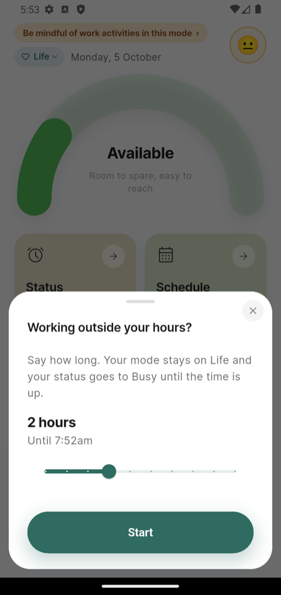
On the dashboard, tap the figures on the bottom card (or the sentence under them, which ends in ›). BAI shows the events behind the number: one day in a small window, a week or a month on a page of its own.
Under the total it says how full the stretch is, in the same words and colour as the dashboard: Today is filling up. A good day to say NO. Leave an event out and it updates there and then.
You can sort the list, and tap an event that has not ended yet to leave it out or set a reminder to prepare.
If the day is overloaded, the same tap opens the capacity page instead. More about these views.
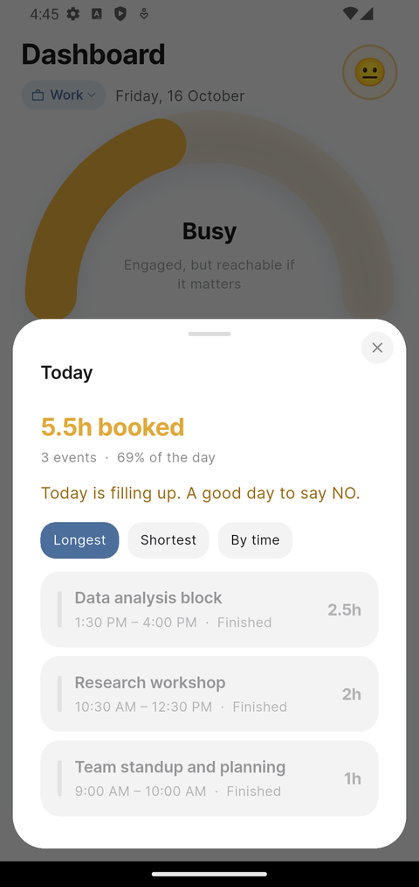
With Fixed hours or Custom hours, BAI tells you 15 minutes before work starts and ends: Work starts at 9:00, Work ends at 17:00.
It is for that day only; your schedule is not changed. Starting later keeps you in Life until then. Staying longer keeps you in Work, and that time counts as work. Each start and end gets one heads-up.
To start early, switch to Work with the mode chip, as before. More about these notices.
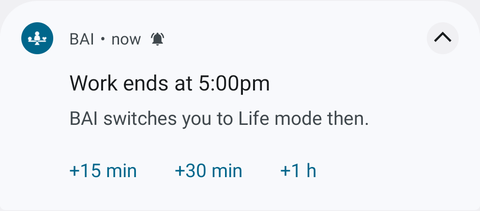
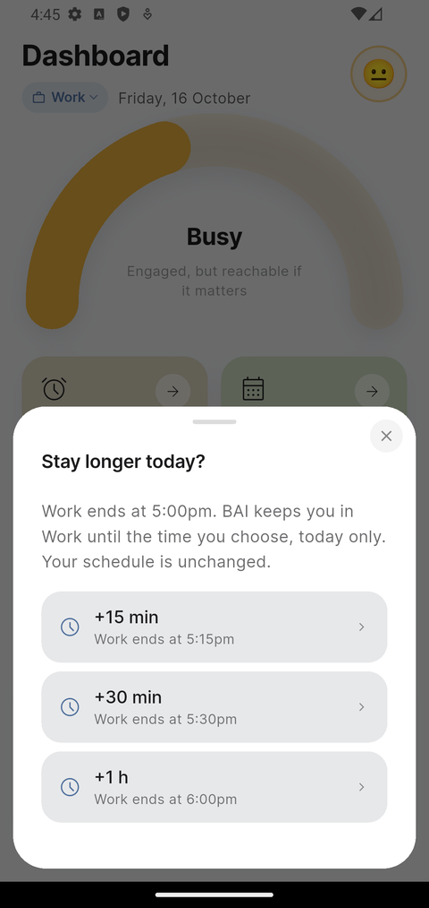
At 16:00 on your last work day of the week (Friday, for most people), BAI sends Your week in BAI. Tap it, or See it if BAI is open, and Insights opens with a Your last 7 days card on top:
Only the lines with something behind them are shown. The notification itself has no figures: it is sent with BAI closed, so the numbers are worked out when you open it.
It comes whether your schedule is on or off. It skips a week with too little in it (fewer than two days with work, a check-in or a status change) and the weeks you are on holiday.
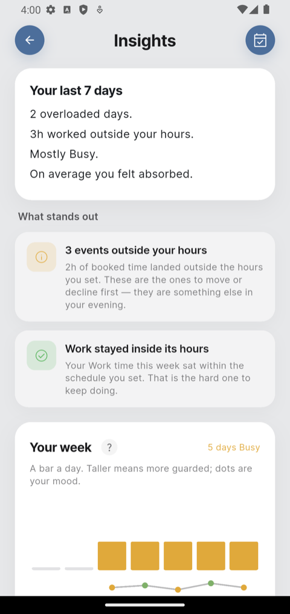
BAI looks at your load and, when it gets heavy, says what break would help. It never sends this on its own; you see it when you look: tap the figures on the dashboard's bottom card, on the Today, Week or Month tab, and the window or page that opens shows a Break note.
If your check-ins have been heavy for a few days, the week and month lines come sooner. Nothing shows when your load is ordinary.
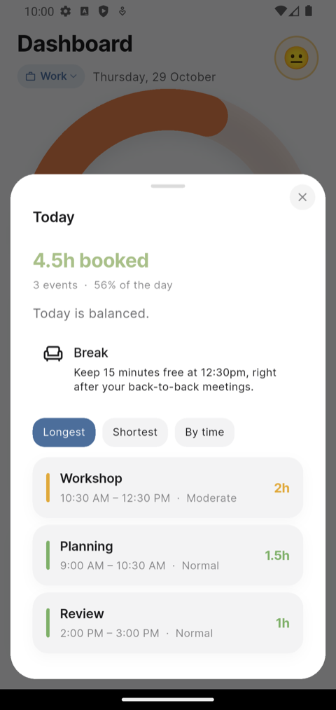
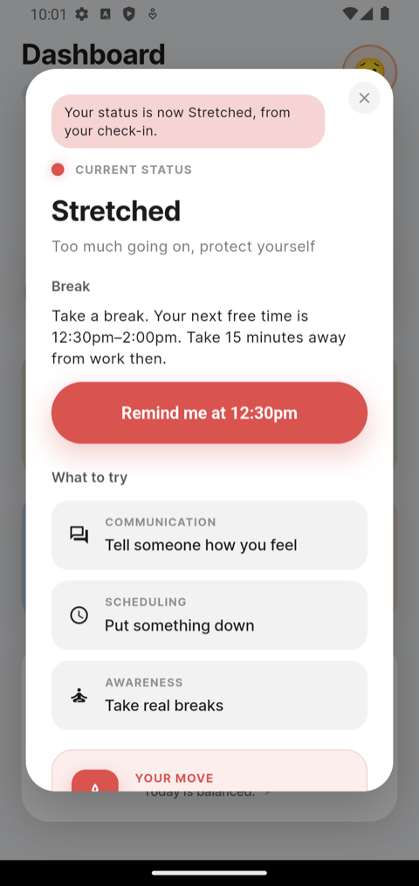
Finish setting up first. These shortcuts assume your schedule and calendar are already set in Controls. If they are not, start there.
Tap one to go straight to it.
Before you start
This is what opens when you launch BAI, and where the tour begins and ends.
The first time you open BAI, a short set of cards shows over the dashboard: the everyday things, one per card. A few more follow later, with the next update or a week on, until you have seen them all. After an update, any card that is new shows under New since you last looked, and nothing shows if there is nothing new. The pictures on them are examples only. Tap Next to go through them or Skip to close; the last card has a button that opens this guide.
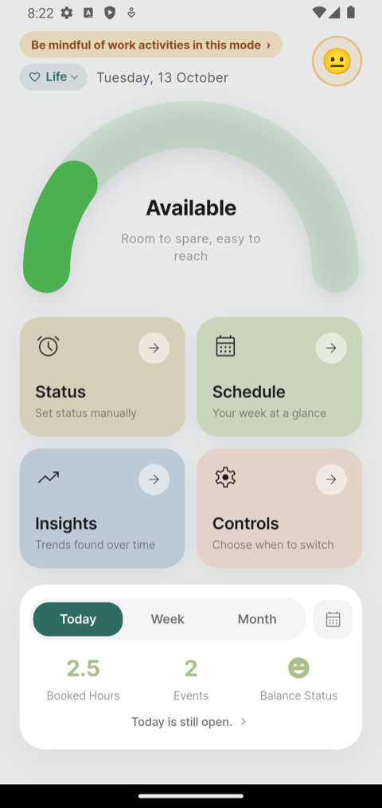
Tap the figures on the bottom card, or the sentence under them (it ends in ›), to see what is behind the number. For one day a small window opens over the dashboard.
With Week, Month or days you picked, the same tap opens the Booked hours page.
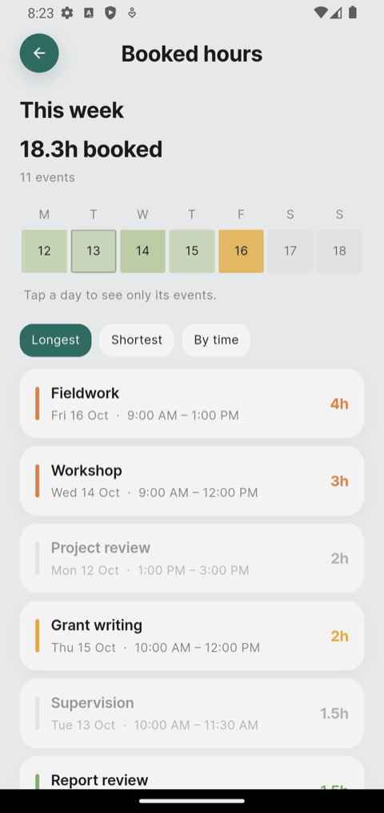
Step 1
Start here. Controls is where you set the working pattern everything else is measured against, and choose what BAI is allowed to read.
From the dashboard, tap Controls. Switch Schedule on to let BAI move you between Work and Life mode by itself.
Tap the day letters to pick your working days — selected days are filled in. Weekends are off by default.
Turn the schedule off on holidays and days off. BAI then leaves your mode alone until the schedule is back on.
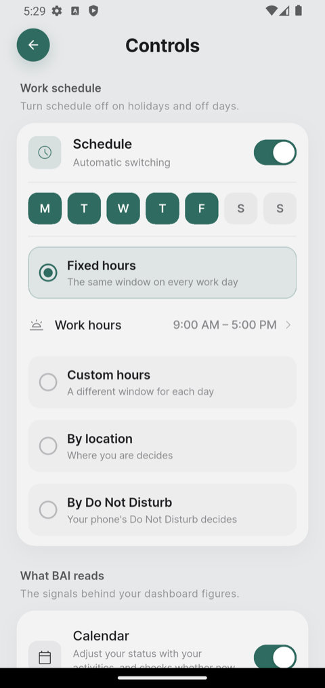
Switching the schedule off asks Turning your schedule off, with two answers:
Close the question without answering and the schedule stays on. Coming back early? Switch the schedule on yourself; that ends the time off.
While you are away, BAI stops its mood reminders and skips the weekly look-back.
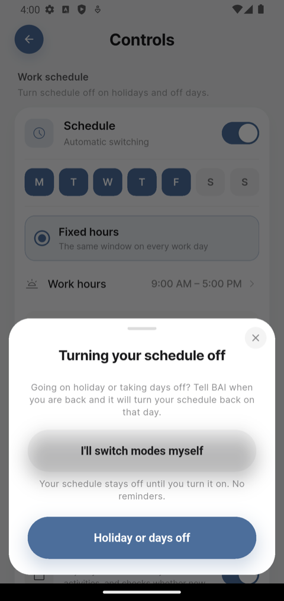
With the schedule off, tap the mode chip on the dashboard and choose Work. Coming from Life mode, BAI asks How long are you working for? — pick 1, 2 or 4 hours, the rest of today, or choose a time of your own.
For anyone who manages Work and Life by hand and sometimes forgets to switch back — set a length once, and BAI remembers for you.
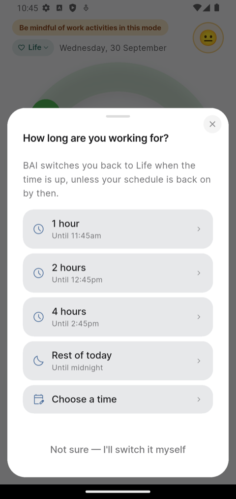
Choosing a length shows a banner straight away, naming the time you will be switched back. When that moment comes, BAI tells you the same way it tells you about anything else: on the lock screen if you are away, in the app if you are not.
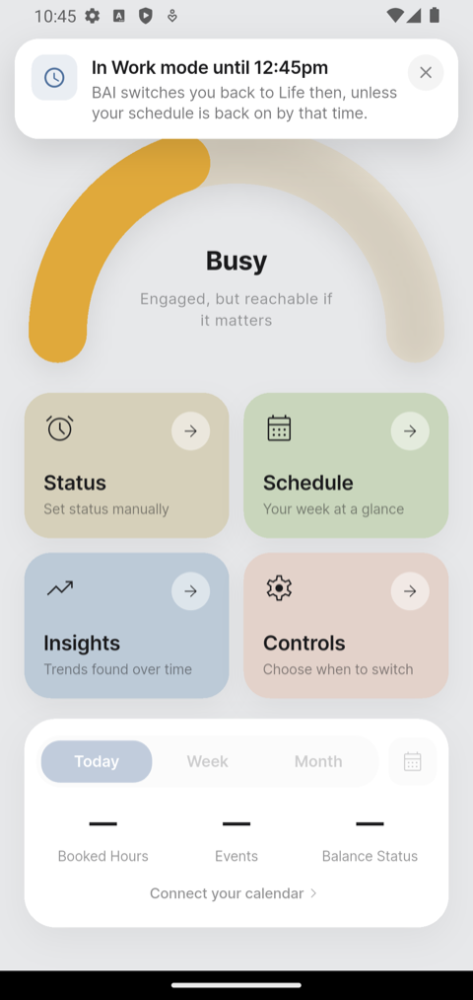
Pick one — BAI uses one way at a time:
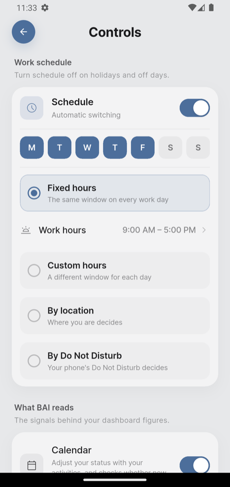
Some days are not one stretch — a morning, then an afternoon, then a shift in the evening. With Custom hours, tap a day and use Add a block for each one, for example 9:00–11:00, 2:00–7:00 and 8:00–11:00 in the evening. Tap Remove this block on any you no longer want.
BAI is in Work mode during every block and in Life mode between them, so a forgotten manual switch does not leave you at work all evening.
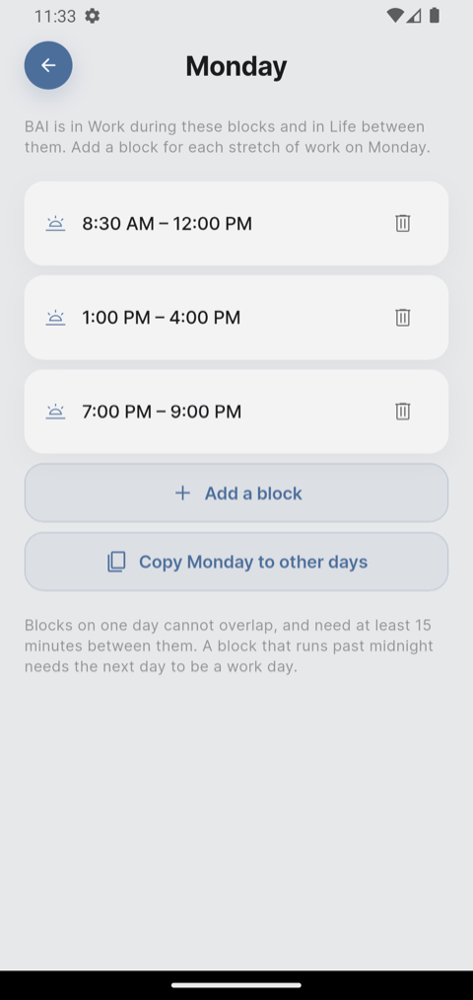
Instead of hours, let your phone decide: switch on a Focus (or Do Not Disturb) and BAI moves you to Work; switch it off and you are back in Life.
On iPhone — By Focus. Set it up once in iOS Settings:
Controls then says Connected. Last heard… the first time it hears one.
Open BAI when you change Focus.
iPhone only tells BAI about a Focus change while the app is open. A change made while BAI is closed is caught up the next time you open it — and your Work and Life time is recorded from then, not from the moment you changed it.
On Android — By Do Not Disturb. One button turns your phone's Do Not Disturb on or off, and the mode follows: Work while it is on, Life while it is off. The first time, Android sends you to a system page to give BAI Do Not Disturb access. The Count Do Not Disturb switch decides whether being on counts as Work at all.
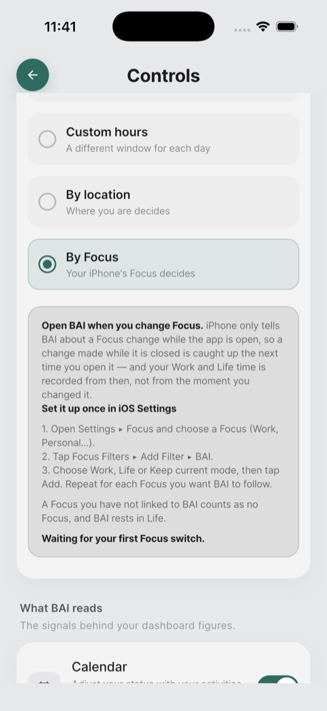
Choose By location, then tap Locations. Add the place that means Work and the one that means Life — your office, home, wherever the switch should happen.
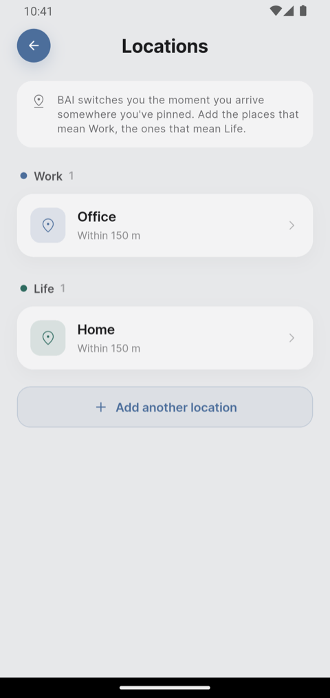
Only add a place while you are standing at it.
Locate me marks exactly where your phone is at that moment — not an address you type in, and not somewhere you are planning to be. Marking your office from home, or the other way round, pins the wrong spot, and BAI will switch you at the wrong place — or never.
BAI confirms with Marked here and how accurate the reading is — a few metres is normal indoors.
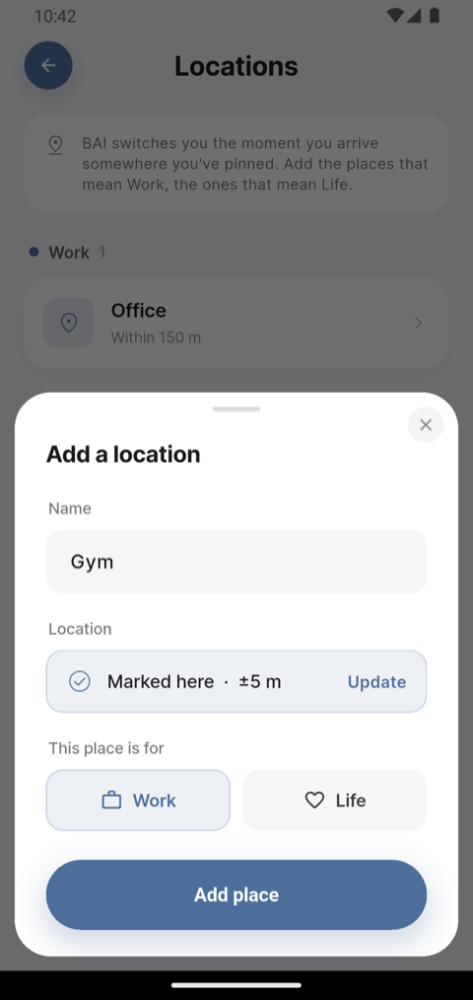
Scroll to What BAI reads and switch Calendar on. Two ways to give BAI a calendar appear beneath it — use either, or both:
BAI only ever reads your calendars. It never adds, edits or deletes anything.
With the switch off, the Schedule and the dashboard say Calendar is off. With it on but no calendar chosen yet, they say No calendar connected. Either one takes you straight here.
Switching it off New: BAI first says what changes. Your status no longer follows your meetings, and there are no overloaded-day alerts or reminders to prepare. From then on your mood check-ins are what BAI goes on, so check in often; with your schedule on, BAI reminds you after two work days without one. Choose Turn calendar off, or Keep it on to change your mind.
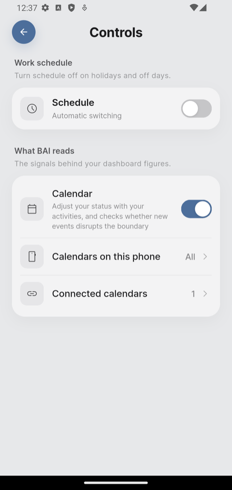
Tap Calendars on this phone. The first time, your phone asks whether BAI may read its calendars — this is the only place it asks.
Every calendar on your phone is listed, grouped by the account it came from. Switch off the ones that are somebody else's — a shared team calendar, a subscribed holiday feed — and their events stop filling your day. To leave the phone's calendars out altogether, turn off Read this phone's calendars at the top.
This matters more than it looks. A shared calendar you cannot control will otherwise make every week read as full.
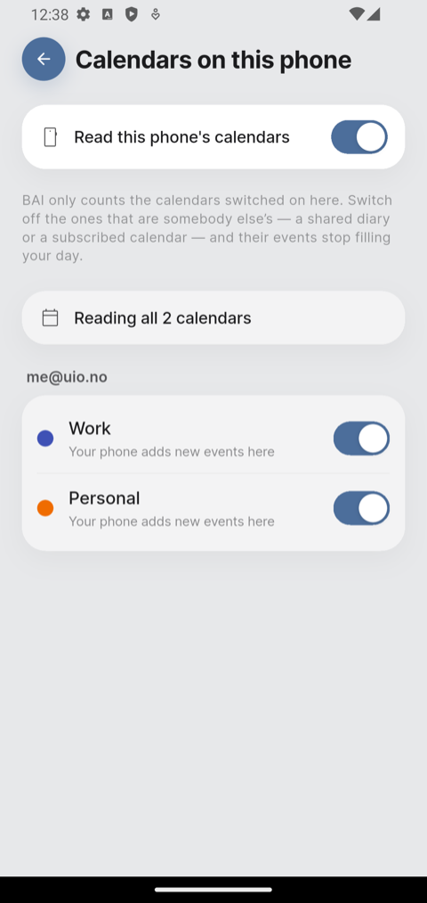
For a calendar that is not on your phone — or one you would rather keep off it — tap Connected calendars, then +. Choose where it lives: Outlook, Google, iCloud, Proton, Fastmail, Zoho, Nextcloud, or Other for anything else.
The link goes straight from your calendar service to your phone, and stays in BAI — it is not added to your phone's Calendar app, and nothing is sent to the study. Anyone holding the link can read that calendar, so keep it to yourself; resetting it in your calendar service disconnects it. For a work calendar, check that your workplace allows sharing it this way.
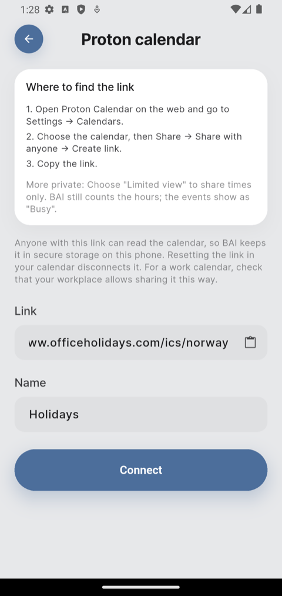
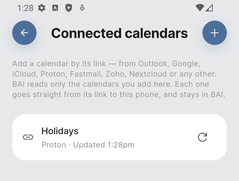
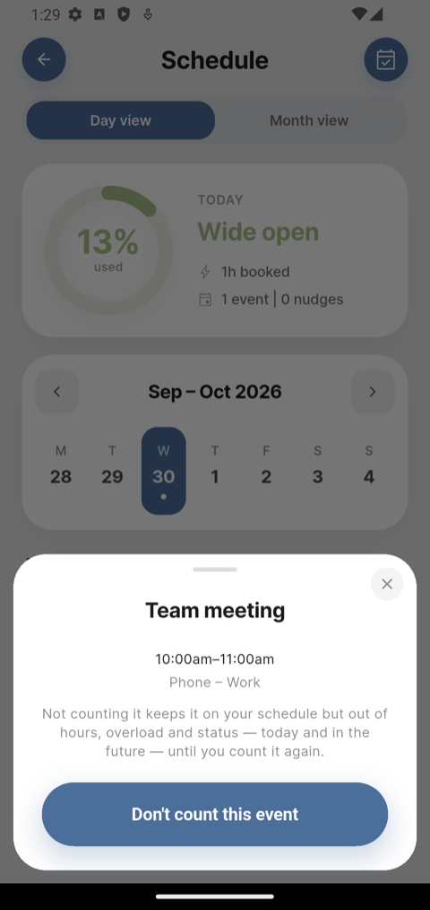
Step 2
With a calendar connected, the Schedule screen turns your calendar into a single reading: how much of today is already spoken for.
Tap Schedule from the dashboard. The ring is the share of your day already booked, and the word beside it is the verdict — Wide open, Still open, Balanced, Filling up or Overloaded.
Underneath it: hours booked, and how many events that is.
The strip under the ring is your week. The coloured dot beneath each date is that day's verdict, so you can see a heavy Thursday coming before you agree to anything else. Tap any date to read it.
Below that, every event on the chosen day, with its share of your capacity. Finished ones are struck through.
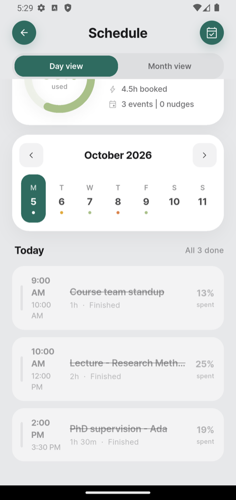
Tap Month view for the whole month at once, each day tinted by how full it is. The key at the bottom explains the colours.
Useful when someone asks for a date three weeks out and you want to know what that week already looks like.
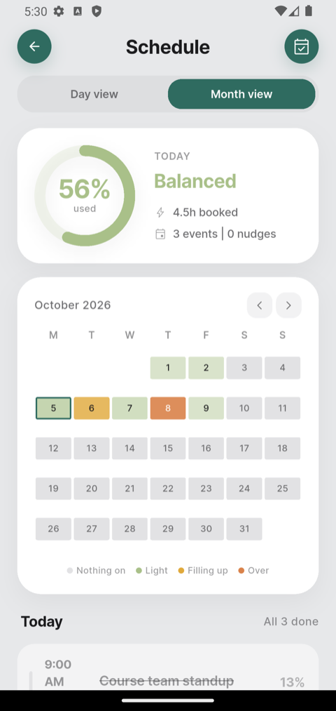
The calendar button in the top-right corner answers a different question from the rest of the screen: not "how is today going?" but "am I free then?"
Tap it and pick a date. For a range — a conference week, a fortnight you are thinking of taking on — drag across the dates, or tap a second date. Tapping or dragging again starts over, so there is nothing to undo. Then tap See availability.
A drag stays inside the month on show. For a range that runs into the next month, tap the first date, use the arrow, and tap the last.
BAI answers in a sentence — You're open, There is room, You're nearly full, You're full, or Some days are full when the average looks fine but individual days do not — with the figures underneath it.
This is the one to reach for when somebody asks you to commit to a date, which is exactly when the diary is hardest to hold in your head.
The week strip and the month view both let you go back to earlier days. On a day that has already gone, BAI describes it in the past tense — that day was overloaded, nothing was scheduled — and stops giving advice about it, because there is nothing left to move.
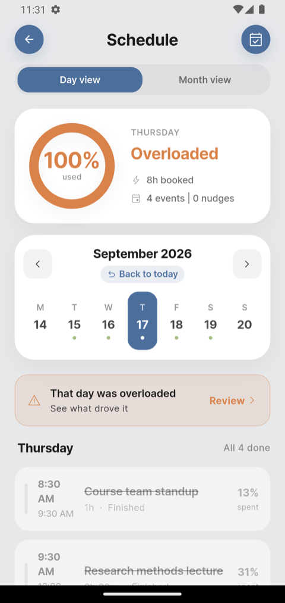
Not everything in your calendar is work you are carrying — a private appointment, a reminder-style entry, something you are not really attending. Tap the event on the Schedule and choose Don't count this event. For an event that repeats you can also choose Don't count any in this series.
An event on a day you do not work (a weekend, or any day you have not ticked as a work day in Controls) may be your own plans rather than work. Tap the event and choose One of my own plans.
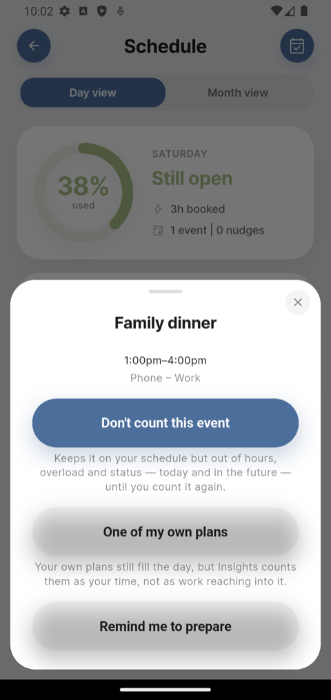
When you add a long event — two and a half hours or more — the Schedule shows a strip: 1 new event in your calendar. Tap it to see each one highlighted, not judged:
BAI does not guess what an event is or tell you how long it should take. You know what you booked; this is only so nothing lands unnoticed.
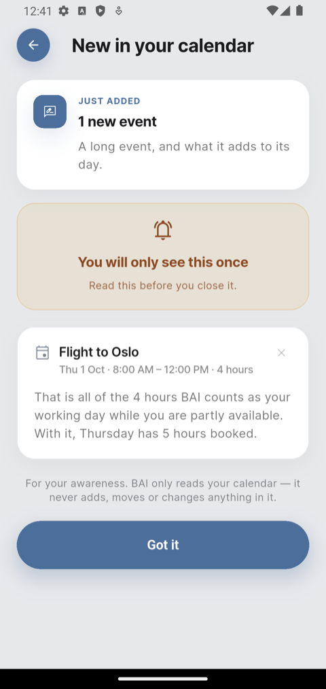
For an event you need to get ready for — a presentation, an exam, a hard conversation — tap it on the Schedule and choose Remind me to prepare. Tick any of 1 to 5 work days before; each line shows exactly when it will come.
If BAI is open when a reminder is due, it tells you in the app instead of on the lock screen.
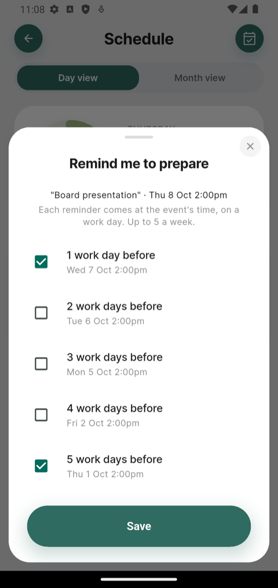
Assumptions that are worth saying plainly about what BAI charges to your day.
So a week of invitations you will probably turn down reads as full, and a week at an all-day conference reads as open. If the ring ever looks wrong, this is usually why.
Step 3
Your current status is the boundary negotiation practice you must follow in the moment/time/period.
Tap on the arc to see more details.
Most of the time the schedule sets it for you; but you can also control this manually or via your mood.
Tap Status on the dashboard and choose one of six:
Tap Continue to confirm — or slide your finger round the arc at the top; it stops on each status, Partly available included.
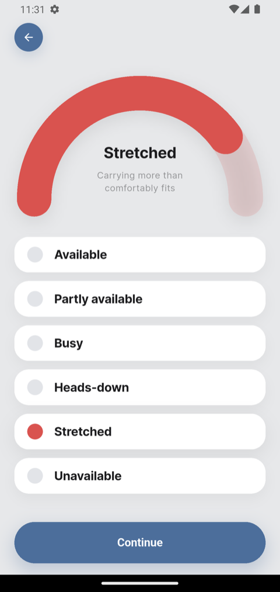
For someone working, say, half time, four hours a day, or two days a week — an arrangement agreed with an employer, for health or another reason. It is not about how full your calendar is; it is a standing agreement about how much you are available.
Only you can set it — on the Status page. Your mood never sets it, and neither does an event in your calendar.
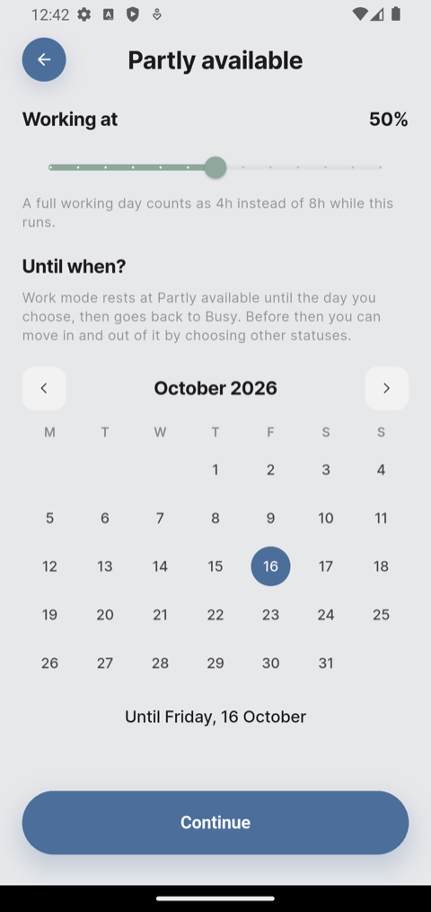
Available, Busy and Heads-down move with your day. Stretched and Unavailable are different: no meeting or calendar event changes them.
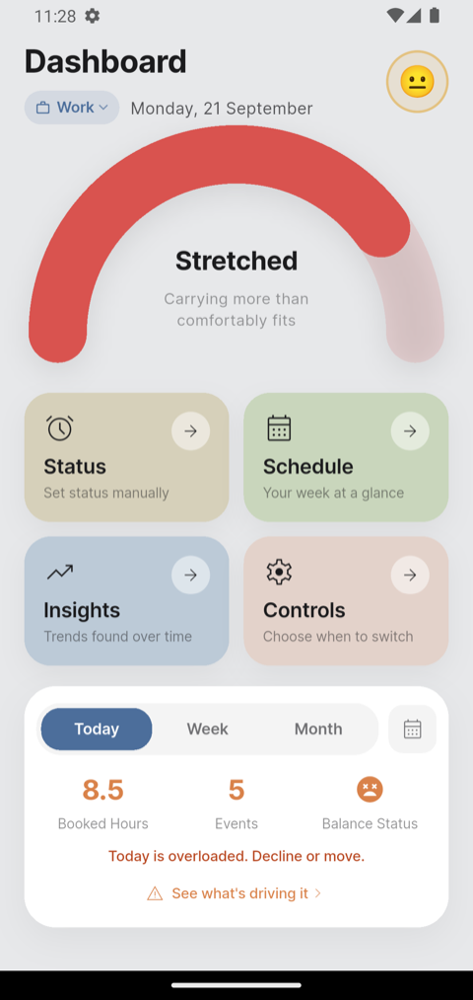
Step 4
BAI tells you three kinds of thing: when it switches your mode, when a day is overloaded, and the occasional reminder that a setting needs a look.
You are told once: on the lock screen if you are away, in the app if you are in it.
Never both. If your phone's notifications are switched off, BAI tells you in the app instead. If the Control Centre or a call is laid over the app, BAI still counts you as being in it.
When a day is booked past what it holds, BAI tells you — by default at 7:00 in the morning, or as soon as a new event pushes today over the line. Tap the alert (or a Now Stretched alert), or the figures on the dashboard's bottom card, or the banner on the Schedule, to open the capacity page. You are told once per day: if the 7:00 alert has spoken, BAI does not send Now Stretched for the same day as well.
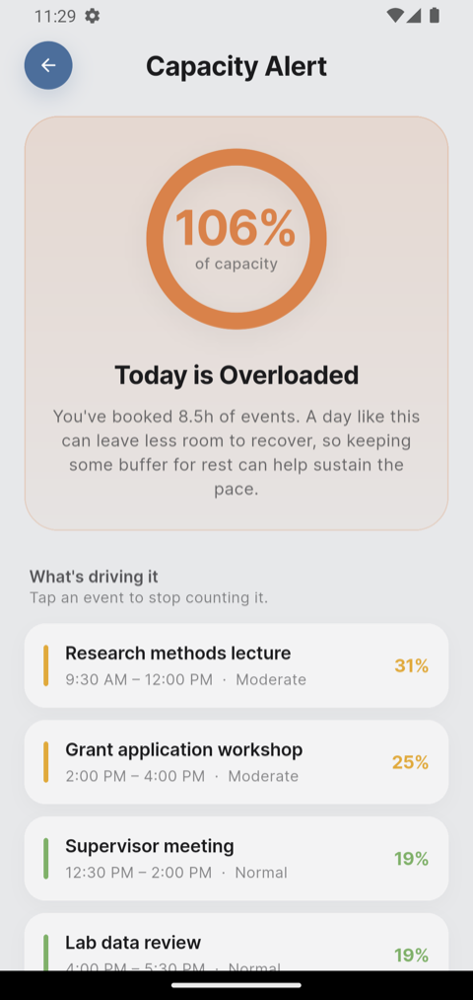
Tap an event in the list to stop counting it — the same choice as on the Schedule. The ring moves the moment you do.
Looking at a day that has already passed? The page reads Wednesday was overloaded, calls the list What drove it, and offers no advice. Its events can no longer be tapped.
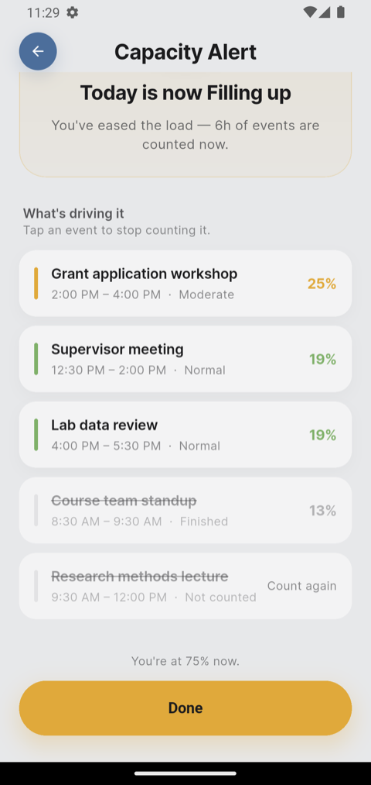
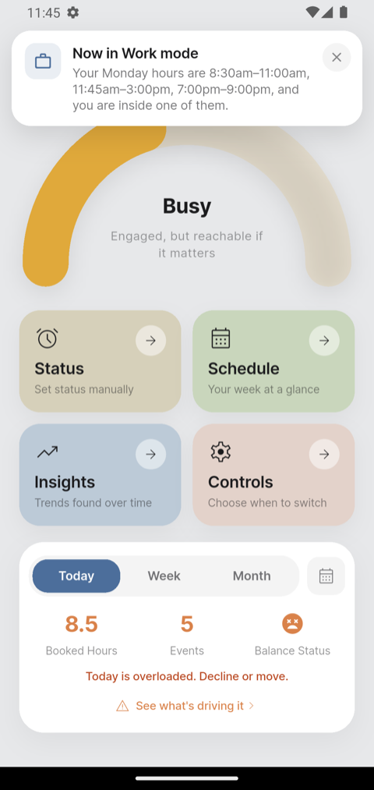
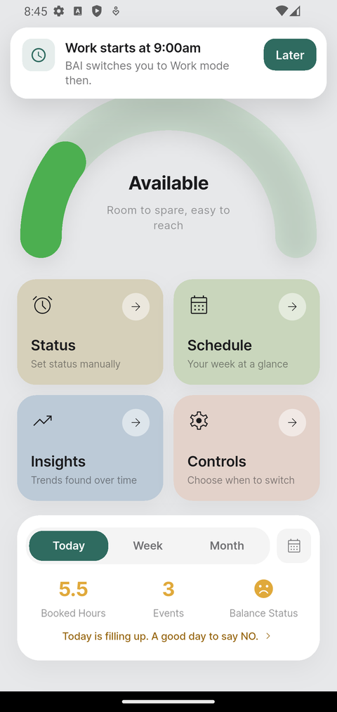
Step 5
Status is what your calendar says. Mood is what you say. The gap between the two is what the study is looking at, so this is the one thing worth doing daily.
Tap the face in the top-right corner of the dashboard. Pick the point on the scale that fits, from Energized at the top to Burned out at the bottom, then tap Set Mood.
The line under the scale describes whichever one you have picked, so you can check it means what you think.
Gone quiet? After five work days without a check-in — two if your calendar is off or none is connected — BAI reminds you once on the lock screen, then in the app once a day until you check in (twice a day with the calendar off or none connected). It never asks on a non-working day, or while your schedule is off.
If none of the ten fits, tap Add your own at the foot of the scale. Name it, write one short line describing it, and place it on the scale — 1 is your most available, 10 your least. It joins the list and stays there.
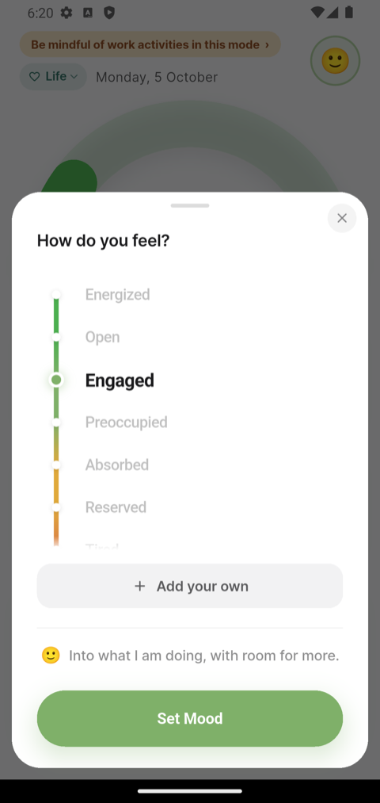
A mood that pulls away from your current status brings up a second sheet — here, Stressed against a status of only Busy — naming what it would change your status to and why. Set to … accepts it; Keep my status leaves it as it is. Either way, the mood itself is recorded.
Accept it and tap the arc on the dashboard: the negotiation advice you get now speaks to how you actually feel — see Daily use, step 2.
The morning after a work day, BAI may ask How did yesterday go? It is a look back at how the day felt to get through, whatever was on your calendar. Tap Answer and pick one: Went really well, Went well, Mixed, Hard going or Very hard going, then Save.
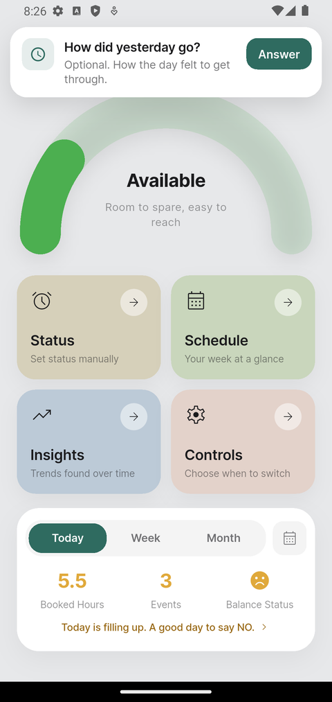
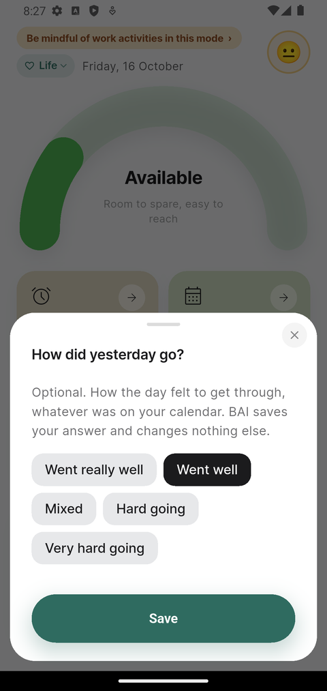
Step 6
Insights is the only screen that looks backwards. It needs a few days of use before it says anything; until then it tells you so rather than guessing.
Insights opens with what stands out, written in sentences: patterns BAI has noticed across the period, such as most of the week spent Heads-down or heavier, less room as the week goes on, or work outside your hours adding up.
Once there have been three overloaded days in four weeks, it also says what happened on them — whether you left Stretched as BAI set it or changed it, by hand or after a check-in — and whether those days felt heavier than the rest.
These are observations, not instructions. They are there to be recognised or dismissed.
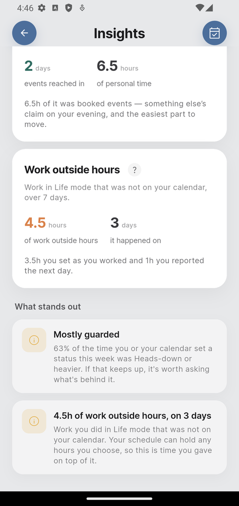
Under what stands out comes Your week, a bar a day: taller means more guarded. The dots along it are your mood check-ins, so you can see the two move together — or not.
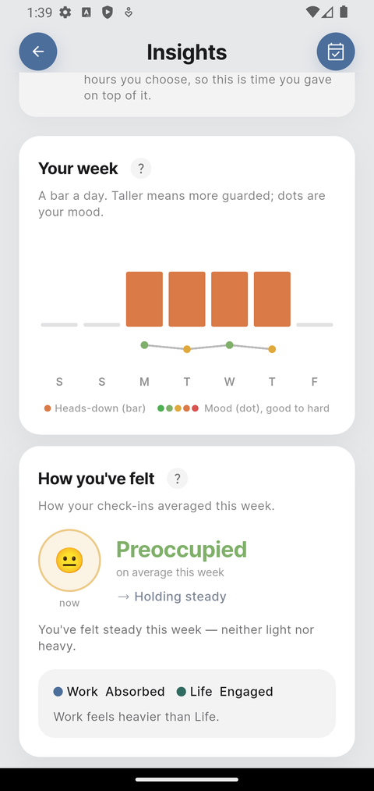
How you've felt sums up your check-ins in words, not numbers: your week's average as a mood — Tired, Absorbed, Stressed — with a sentence about what that means, and each mode's average as a word too. If Life is reading heavier than Work, it says so, which is exactly the kind of thing worth noticing.
Where your time went splits the time a status was set — by you, or by your calendar — by status, so you can see how much of the week you spent holding people off. The status BAI rests on when your mode changes (Available in Life, Busy in Work) is not counted, so your nights are not in it.
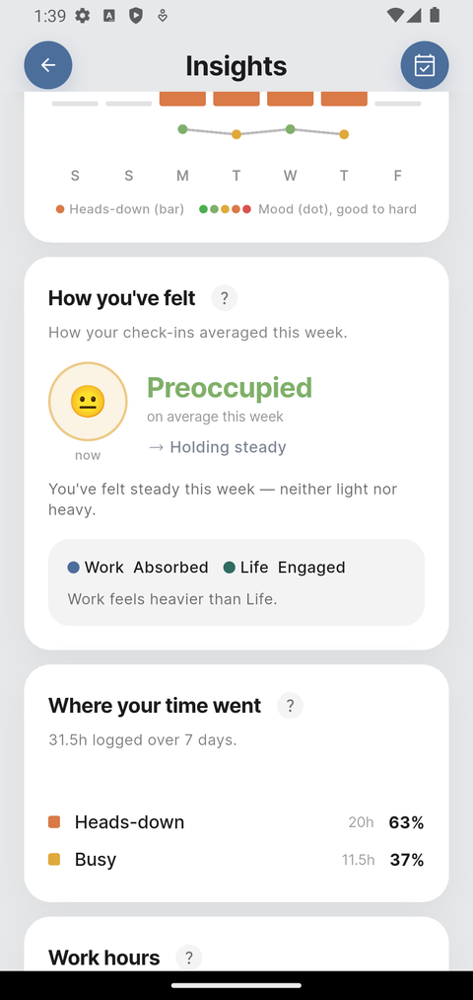
Work hours compares the time you actually spent in Work mode against the hours you told BAI you work — and how much of it landed outside them.
It appears only when your work schedule is set to Fixed hours or Custom hours in Controls. With the schedule off, or switching by place, By Focus or By Do Not Disturb, there are no planned hours to compare against, so Insights leaves it out.
If you change your schedule, the count starts again from that moment. Days you worked before the change are not measured against the new hours.
Time you chose to stay on from the 15-minute heads-up still counts as outside your hours, and BAI says how much of it you chose.
This is the boundary, measured. Hours outside your own window are the number to watch.
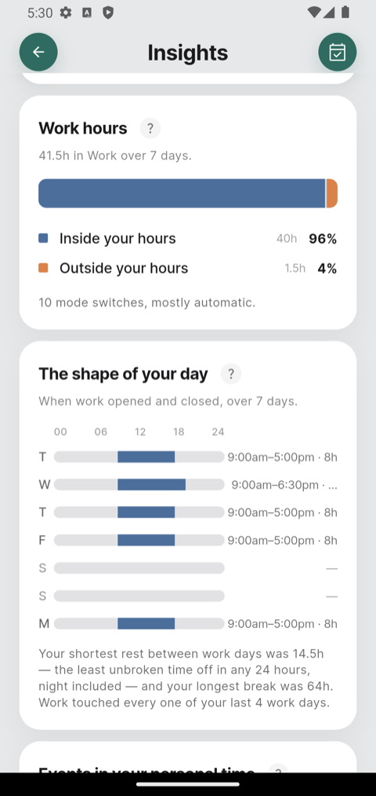
A bar per day showing when work opened and closed. Underneath it, your shortest rest between working days and your longest unbroken break.
The work you did in Life mode that was not on your calendar: the time you set with the yellow line on the dashboard, and what you answered when BAI asked the next day. It shows the hours, and the days it happened on, over the last 7 days.
It appears once you have recorded some that week. It is not part of your work hours, and calendar events in Life mode are counted separately, under Events in your personal time.
The events on your days off that you marked as one of your own plans: the hours, and the days they were on, over the last 7 days.
It appears only once you have marked some. These hours are your time, so they are not counted under Events in your personal time or in events outside your hours.
Insights has its own calendar button, the mirror image of the Schedule's: it only lets you pick days that have already happened, and asks how did it go? rather than am I free? Pick a day, or drag across a range, and tap See how it went. BAI answers in the past tense — You were full, There was room — with the figures beneath.
While Partly available runs, the first panel is Your arrangement: the hours you booked against the hours you agreed, with a bar that turns orange past them.
It shows in Work and Life while the arrangement runs, and goes when it ends.
Step 7
BAI has a widget: today's load at a glance on your home screen, and on an iPhone on the lock screen too. With the calendar off it becomes a one-tap mood check-in instead.
Home screen — keeps the BAI icon where it is:
Touching and holding the BAI icon itself also offers the widget, but on iPhone that turns the icon into the widget — the icon goes from the home screen. BAI is not deleted: it is still in the App Library (swipe left past your last home screen), and tapping the widget opens it. Use the steps above to keep both.
Lock screen — a small ring, like the battery one:
The lock screen draws widgets in one colour to match your wallpaper, so the ring does not turn amber or red — the percentage says it.
It shows the day in a word — Balanced, Filling up, Overloaded — the hours booked, and when it was last updated. Android has no lock-screen widgets on phones, so this one is for the home screen only.
The widget shows the day as BAI last read your calendar, and says when — as of 11:42. It refreshes whenever you open BAI, and in the background when your phone allows. If it looks out of date, open BAI for a moment.
In short
Once it is set up, BAI asks very little of you: